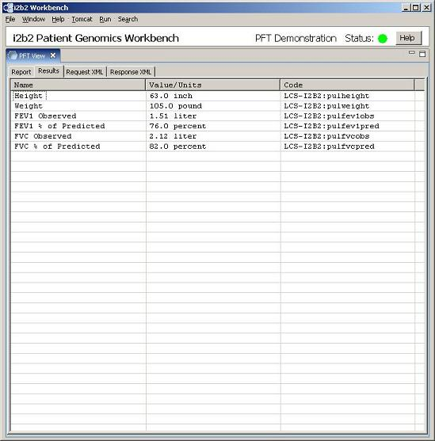

Results Tab
The results tab shows a table view of a list of PFT results found in the report. If
errors are returned, the results tab will also display any errors. The table has the
following columns.
- Name Column
- Displays the name of the result.
- Value/Units Column
- Displays a text string representing a value and any applicable units of measure.
- Code Column
- Displays the underlying code used to record the observation.
